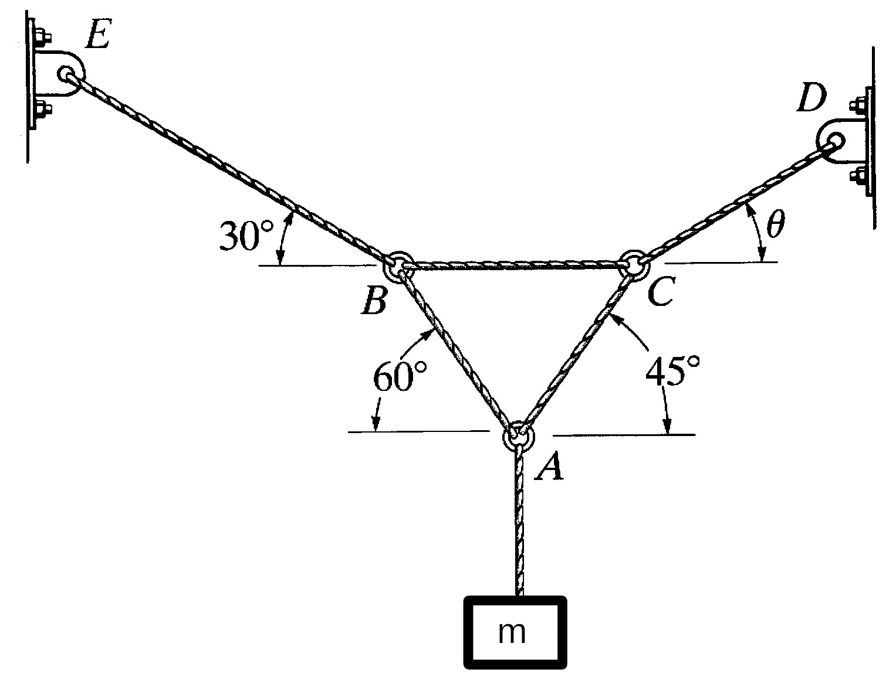

Table of Contents
Lab 4: Forces part 2 (click here to download PDF)
In this lab you will explore some Python scripts or programs used to solve systems of linear and non-linear equations. Linear Algebra is a branch of mathematics which studies systems of equations with n equations and n unknowns. Linear equations dominate many fields of science and engineering including civil, structural, mechanical and even forms the basis of all of the recent machine learning (AI) technology. Non-Linear equations are also found in many fields and can be problematic to solve if care is not taken. Lets use the force table to explore these complicated topics!
Basic Mathematical Thought: A system of equations is well defined when there are n independent equations and n unknowns. Thinking about the ring in the middle of the force table, we have 2 dimensions (x and y) so can only solve a problem with 2 unknowns. Before diving into the physics, lets look at some python code:
Python: Code syntax refresher
This lab requires some use of Python, it is not necessary to know any coding beforehand, just try to pick up what you can. Here is a brief overview of how to import modules, use lists and declare functions in Python:
# import will load special functions an external library # this library is called numeric python (numpy) import numpy # show output using the print() method # print can show multiple "strings" and calculations together print("Hello World!") print(2+2,"equals four") # to access a function inside of numpy, use a dot (.) print(numpy.pi) print("cos(pi/4)=",numpy.cos(numpy.pi/4)) # A list in python is denoted with square brackets [ ] # Elements in a list can be accessed via index (starting at 0) listA = [1, 3, 5, 7] print("first element=",listA[0],"Last element =",listA[-1]) # functions are declared using the def keyword # these functions take arguments just like a calculus function would # The indentation level of the text designates when the function ends def power(x,n): return x**n # this kustom function can now be called at any point later in the code print("2.3^3 = ", power(2.3,3))
Hello World! 4 equals four 3.141592653589793 cos(pi/4)= 0.7071067811865476 first element= 1 Last element = 7 2.3^3 = 12.166999999999998
Python: Numerical root solver
Almost all physics and engineering problems require solutions to algebraic equations. Many times these equations are non-linear and difficult to solve. Numerical methods can come to our rescue. The below code shows how to use a numeric root solver to find solutions to systems of equations:
\[x\cos (y) = 4\]
\[xy-y=5\]`
# import fancy numerical methods inside of scipy library # fsolve can numerically solve very complicated systems of equations!!! import numpy import scipy.optimize # system of equations -> x*cos(y) = 4, y*x - y = 5 # x[0] is x and x[1] is y in the example below def func(x): return [ x[0] * numpy.cos(x[1]) - 4, x[1] * x[0] - x[1] - 5 ] # Find a numeric solution using guesses x=1 and y=0.5 sols=scipy.optimize.fsolve(func, [1, 0.5]) print("solutions x,y: ",sols) # verify the solutions (should equal ~0) print("A \'root\' means the function should evaluate to zero: \n",func(sols))
solutions x,y: [6.50409711 0.90841421] A 'root' means the function should evaluate to zero: [7.105427357601002e-15, -3.552713678800501e-15]
Checkpoint:
- Interested in programming: open up jupyter/colab/sagemathcell for this lab. You will need to run and modify this code to complete the lab!
- Review the above python code. Try to pick up pieces of the syntax as you work thru examples.
- Verify by hand that the solutions found using the root solver are actually solutions.
1. Five forces in equilibrium
This lab requires some complicated (or at least tedious) calculations. The system we are studying has 5 tensions pointing in 5 directions. This complication level screams out for using a computer to perform the calculations. Many would use Excel, but I much prefer the power of a real programming language.
1.1. Free Body Diagrams and the Unit Circle
Draw a free body diagram of the top of the force table with 5 forces. We will have to use a rigid framework to define the angles which the forces point. This is what the unit circle was designed for! Recall the unit circle requires angles be measured starting at 0 on the horizontal-to-the-right direction:
1.2. System of equations
Write out a system of 2 equations and 2 unknowns (Newtons second law): Lets analyze the system of equations:
\(\sum F_x =\)
\(\sum F_y =\)
- 1 unknown Force vector (both magnitude and direction of the same force, nonlinear but easy to solve by hand in cartesian coordinates)
- 2 unknown Forces (magnitudes): Set 5 angles and 3 weights. Find two unknown weights. (linear equation)
- 1 unknown Force vector and another unknown angle from a different force. (non-linear equation)
- 2 unknown angles (direction). Set 3 angles and 5 weights. Find two unknown angles. (non-linear equation)
Each of the above systems have the same force equations but will require different techniques to find solutions. We are going to perform the calculation numerically, so pick whichever seems most interesting/fun to solve.
The code below shows how to find the solutions to the top-most system above (unknown 5th force to find balance):
import numpy import scipy.optimize # Define the masses and the angles (4 each) m1, m2, m3, m4 = 0.55, 0.45, 0.25, 0.65 theta1, theta2, theta3, theta4 = 0, 90, 180, 270 # REQUIRED STEP: Convert angles to radians -> unit circle definitions for trig theta1 = theta1*numpy.pi/180 theta2 = theta2*numpy.pi/180 theta3 = theta3*numpy.pi/180 theta4 = theta4*numpy.pi/180 # Calculate tension (from the weights) in each string T1,T2,T3,T4 = m1*9.8,m2*9.8,m3*9.8,m4*9.8 def tensions(x): return [ T1*numpy.cos(theta1)+T2*numpy.cos(theta2)+T3*numpy.cos(theta3)+ T4*numpy.cos(theta4)+x[0]*numpy.cos(x[1])-0, T1*numpy.sin(theta1)+T2*numpy.sin(theta2)+T3*numpy.sin(theta3)+ T4*numpy.sin(theta4)+x[0]*numpy.sin(x[1])-0, ] sols=scipy.optimize.fsolve(tensions, [3, 1]) print("Place mass of",sols[0]/9.8,"kg at angle", sols[1]*180/numpy.pi, "degrees")
Place mass of 0.36055512754637475 kg at angle 146.30993247400784 degrees
1.3. Solving your own tension balance problem
As a group, solve one of the other cases shown in the previous step. Pick reasonable (but somewhat random) angles and weights which form the knowns. As a group, write out the force balance equations and modify the above code to solve the problem you chose.
Checkpoint:
- Show the instructor your code which can solve one of the above situations. Ask for help if you need any.
2. Force equilibrium with 3 rings
Now lets solve a challenging problem (borrowed from WMU statics course). Try to follow the same steps as the force table problem to practice your techniques:
- How many equations will you have in your system with 3 rings?
- How many unknown tensions/angles are present?
2.1. Find the tension in each rope
The lamp has a mass of 15 kg and is supported by the 6 cords shown below. Determine the tension in each cord and the angle \(\theta\) to reach equilibrium \(\sum \vec{F} = 0\)

Checkpoint:
- Write out the six force equations for the three rings.
- Modify the above root finding equations to find the 5 tensions and one angle.
- Is there a way to make this a set of linear equations rather than non-linear? Yes, just make the tension in the upper right cartesian rather than polar! Pretty cool right?